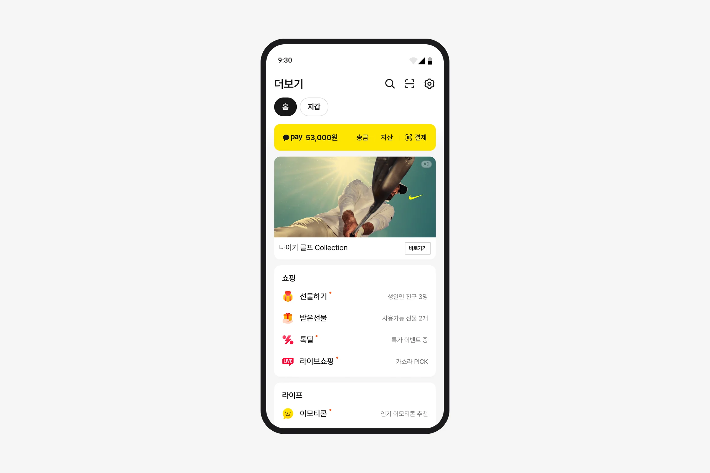
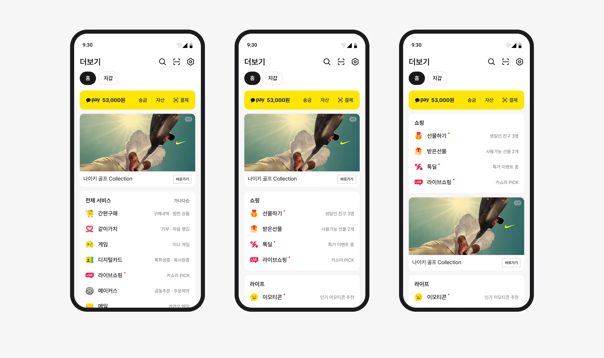
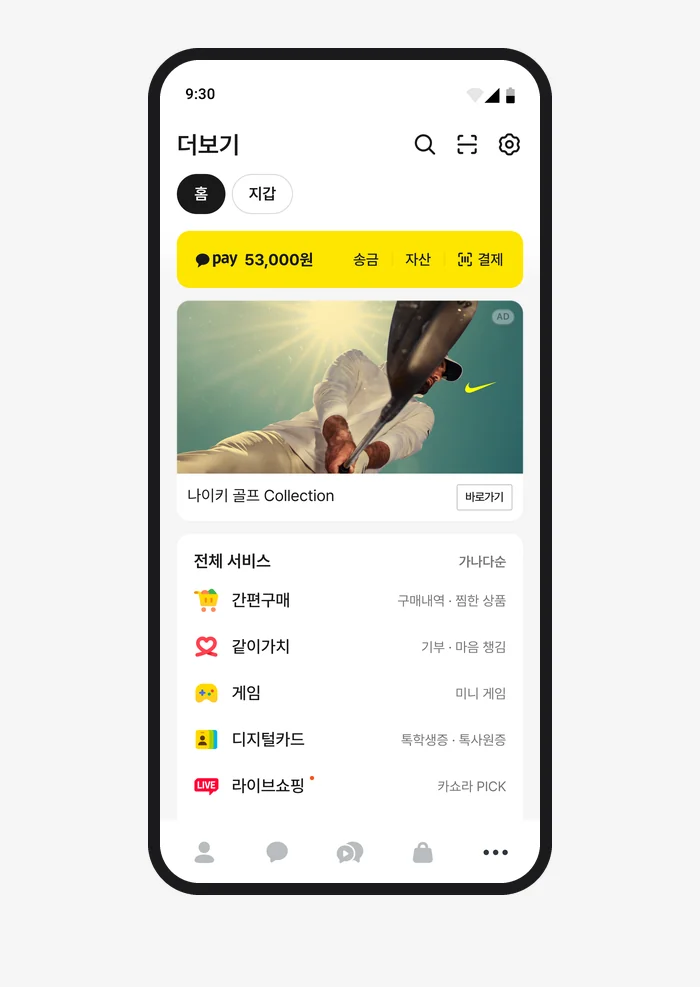
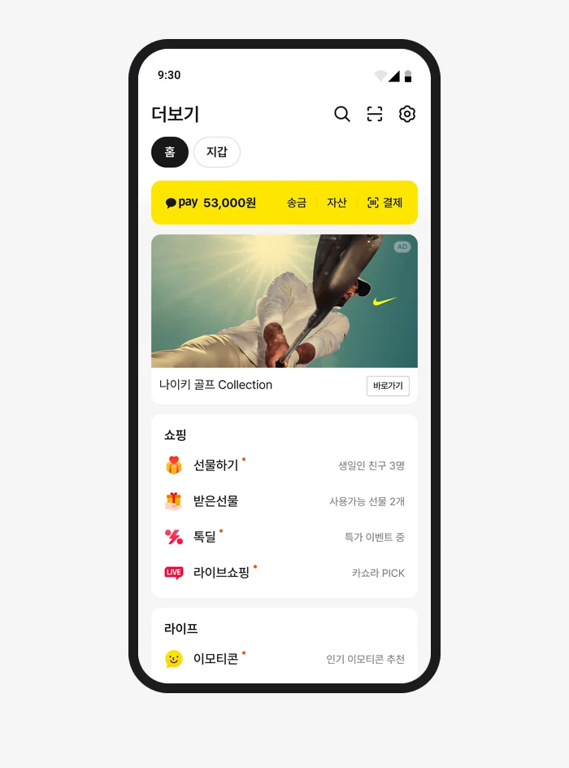
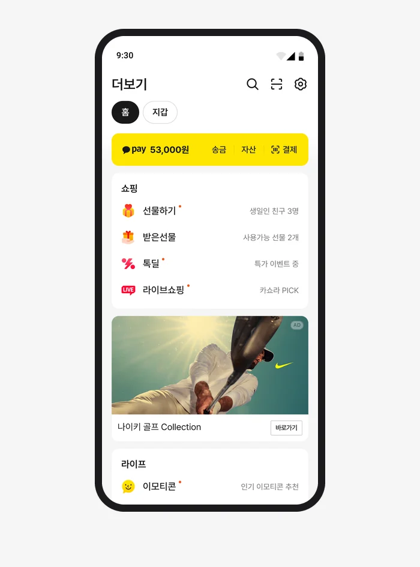

리스트형 탐색 강화 실험
더보기탭의 서비스 탐색 영역을 그리드에서 리스트로 바꾸는 실험을 진행했습니다. 카테고리순 리스트인 B안을 채택했지만, 서비스 클릭 감소는 다음 실험에서 풀어야 할 과제로 남았습니다.
그리드에서 리스트로
더보기탭에는 결제, 서비스 바로가기, 광고가 한 화면에 함께 있습니다. 사용자의 활동은 대부분 첫 화면에서 끝났고, 광고 아래 영역은 거의 눌리지 않았습니다. 처음에는 스크롤을 유도하는 버튼과 안내를 세 차례 설계했지만, 아래쪽 버튼은 광고를, 위쪽 안내는 결제 영역을 가렸습니다.
같은 시기 배너 영역을 그리드 구조로 바꾸자, 첫 번째 배너에 몰리던 클릭이 69%에서 41%로 분산됐습니다. 유도 장치를 더하기보다 노출 구조를 바꾸는 쪽을 검토하게 된 근거였습니다.
첫 화면 그리드에는 서비스 12개가 보이고, 나머지는 옆으로 넘겨야 나타납니다. 서비스를 목록으로 보여주고 카테고리별로 묶는 구조를 검토하는 실험을 발의했습니다. 상단 결제 영역 실험과 별개로 진행할 수 있도록 범위를 탐색 영역으로 좁혔고, 스쿼드 리뷰에서 채택돼 2026년 5월에 집행했습니다.
디자인
B안은 쇼핑, 라이프, 지갑처럼 같은 성격의 서비스를 카테고리로 묶었습니다. 카테고리 이름 아래에 서비스를 한 줄씩 놓고, 이름 오른쪽에 한 줄 설명을 붙였습니다.




가나다순으로 정렬한 A안과 카테고리순으로 묶은 B안, 광고 위치를 분리한 C안을 비교했습니다. 탐색 지표가 좋아도 선물하기 구매전환이나 거래액이 의미 있게 떨어지면 채택하지 않는다는 기준을 실험 전에 PM·데이터 분석가와 정했습니다.
결과에서 드러난 차이
B안의 광고 매출은 대조군보다 24.9% 높았지만, 서비스 클릭은 감소했습니다. 광고 매출의 개선과 서비스 클릭의 감소를 함께 놓고 결과를 살펴봤습니다. A안은 선물하기 구매전환이 통계적으로 유의하게 떨어져 제외했고, B안은 가드레일을 지키면서 광고 매출이 가장 크게 늘어 채택했습니다.
B안 · 광고 매출 +24.9%, 서비스 클릭 −9% · 대조군 대비
선물하기는 A안에서 12번째, B안에서 맨 위에 놓였고, 대조군 대비 클릭 감소 폭은 32%에서 11%로 줄었습니다. 리스트 형식뿐 아니라 서비스가 놓이는 순서도 결과에 영향을 줄 수 있다는 단서였습니다.
B안을 채택한 뒤에도 서비스 클릭 감소는 해결할 과제로 남았습니다.
혼합 구조로 이어진 판단
다음 실험에서는 주요 서비스를 첫 화면의 그리드에 두고, 그 아래에 카테고리 리스트를 이어 붙이는 혼합 구조를 검토했습니다. 리스트에서 드러난 서비스 클릭 감소를 후속 실험의 과제로 이어갔습니다. 이어진 과정은 그리드·리스트 혼합 UI 실험에 정리했습니다.
역할
리드한 것
- 문제 재정의와 실험 발의
- 세 실험안의 UI·가이드·디자인 QA
- 결과 해석과 후속 실험 설계
- 디자인 시스템 영향 관리
함께 한 것
- 실험 조건·판정 지표 — PM, 데이터 분석가
- 통계 검정 — 데이터 분석가
- 광고 영향 분석 — 광고 분석 조직